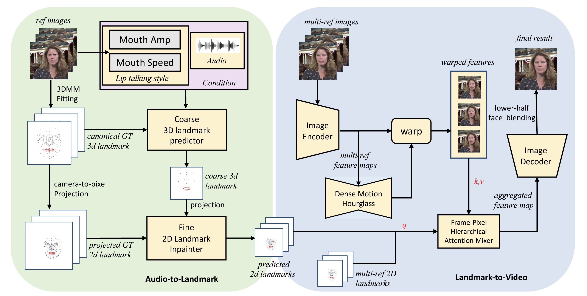

Audio-driven talking head video dubbing aims to edit face motions, especially lip motions, producing lip-synced video according to input audio. However, previous works paid little attention to style information in the original video and mainly took single reference image when generating the current frame. To address these limitations, we proposed HiFiTalker, a novel two-stage framework for high-fidelity talking head video dubbing that includes a two-stage network: (1) explicit style-disentangled audio to landmark network, which extracts lip motion style from original video and generates style-controllable landmarks synced with target audio in coarse-to-fine method; (2) multi-ref landmark to video network, which takes driving landmarks and multiple reference images to synthesize high-fidelity talking head video with a hierarchical attention-based mix layer and hybrid reference selection strategy. Besides, we design an effective data-cleaning strategy and inference strategy to achieve better results. Extensive experiments on in-the-wild examples demonstrate that HiFiTalker outperforms state-of-the-art methods in generating more identity-preserving lip motions and higher-fidelity videos.
The overall inference process of HiFiTalker is demonstrated as follows:

(for Appendix.D) We compare proposed HiFiTalker with several state-of-the-art baselines in both video reconstruction and video dubbing for talking head generaion.
(for Appendix.D) We visualize the frame-pixel hierarchical attention mixture weight by multiplying the mixture weight and the references images.
(for Appendix.E) We compare talking head dubbing videos generated by HiFiTalker with different maunal-set mouth amplitude or mouth speed.